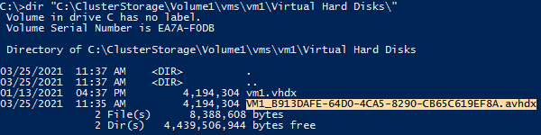

いつも弊社製品をご利用いただきまして誠にありがとうございます。
Windows プラットフォームサポートの石田です。
今回は Windows Server バックアップにて Hyper-V クラスターの仮想マシンのバックアップを取得する際の注意点についてご案内させていただきます。
仮想マシンのバックアップをローカルディスクに保存している構成で定期的にバックアップを取得されている環境の場合、仮想マシンをバックアップから復元しようとする際に、仮想マシン ファイルのリストア後のインポートに失敗することがございます。
本ドキュメントにて回避策や復旧方法についてご案内させていただいておりますので、ご参考にしていただければと思います。
対象
以下の OS バージョンにて Hyper-V クラスターを構成しており、クラスターの共有ボリューム (CSV) に保存されている仮想マシンを Windows Server バックアップにてバックアップを取得している環境
- Windows Server 2012
- Windows Server 2012 R2
- Windows Server 2016
- Windows Servef 2019
事象
バックアップデータから仮想マシンファイルをリストアして仮想マシンをインポートする際にチェックポイントが見つからずに失敗することがあります。
原因
Windows Server バックアップにて仮想マシンのバックアップを取得する際、2 回目のバックアップ時にバックアップ用に作成されたチェックポイント (スナップショットファイル) が、バックアップデータから削除されます。しかしながら、仮想マシンの構成情報にはチェックポイントの情報が残ってしまっているため、仮想マシンをインポートしようとする際に、チェックポイントの情報が見つからないため、インポートすることができません。
対応策
仮想マシンのバックアップを取得する際に、強制的に完全バックアップモードで実行する設定を行うことで、バックアップデータからチェックポイントが削除されること回避することができます。
- Windows Server バックアップの完全バックアップモード強制の有効化
コマンドプロンプトを管理者モードで起動して以下のコマンドを実行します。1
reg add HKLM\SYSTEM\CurrentControlSet\Services\wbengine /v ForceFullBackup /t REG_DWORD /d 0x1
- Windows Server バックアップの完全バックアップモード強制の無効化
コマンドプロンプトを管理者モードで起動して以下のコマンドを実行します。1
reg delete HKLM\SYSTEM\CurrentControlSet\Services\wbengine /v ForceFullBackup /f
また、Windows Server バックアップへの影響を最小限にするという点では、仮想マシンのバックアップを実施するときだけ、完全バックアップモードを設定し、バックアップ完了後に戻すといったことも可能です。
その場合は、タスクスケジューラーにて仮想マシンのバックアップ前後に完全バックアップモードの設定のタスクを設定します。
設定例:
- 日時の 01:00 のバックアップ に合わせて 00:55 に 完全バックアップの設定を実行するタスクを作成
コマンドプロンプトを管理者モードで起動して以下のコマンドを実行してタスクを作成します。1
schtasks /CREATE /TN ENABLE_WSB_FULLBACKUP /SC DAILY /SD 2021/05/08 /ST 00:55 /TR "reg add HKLM\SYSTEM\CurrentControlSet\Services\wbengine /v ForceFullBackup /t REG_DWORD /d 0x1 /f" /RU SYSTEM /RL HIGHEST
- バックアップ終了時刻に合わせて設定を削除するタスクを作成
コマンドプロンプトを管理者モードで起動して以下のコマンドを実行してタスクを作成します。1
schtasks /CREATE /TN DISABLE_WSB_FULLBACKUP /SC DAILY /SD 2021/05/08 /ST 05:00 /TR "reg delete HKLM\SYSTEM\CurrentControlSet\Services\wbengine /v ForceFullBackup /f" /RU SYSTEM /RL HIGHEST
参考
schtasks create
https://docs.microsoft.com/en-us/windows-server/administration/windows-commands/schtasks-create
復旧方法
既に、残されたバックアップデータにチェックポイントの情報が削除された状態のものしかない場合は、仮想マシンのインポートは行えませんので以下の手順にて復旧を行います。
操作は、PowerShell で行いますので、PowerShell を管理者モードで起動して実行します。
構成ファイル (xml もしくは vmcx) ファイルを確認します。
Windows Server 2012/2012R2 およびWindows Server 2016 以降で仮想マシンの構成バージョン 5 では構成ファイルは xml ファイルとなります。また、Windows Server 2016 以降で仮想マシンの構成バージョン 6.2 以降では構成ファイルは vmcx ファイルとなります。1
dir “仮想マシン保存先フォルダ”
実行例
Compare-VM コマンドレットに構成ファイルを指定して仮想マシンの正常性チェックを実行します。
1
Compare-VM -path “仮想マシン構成ファイル名 (xml もしくは vmcx)”
実行例
不整合を検知しているメッセージ ID 40010 と 40002 に対してそれぞれ対応します。
正常性チェックの結果を $report として保存し、不整合と判断されている仮想ディスクファイル名を確認します。
1
2$report = Compare-VM -path “仮想マシン構成ファイル名 (xml もしくは vmcx)”
$report.Incompatibilities[0].Source | select Path実行例
仮想ディスクファイルを確認します。
1
dir “仮想ディスクファイル保存先フォルダ”
実行例
avhd(x) ファイルが複数ある場合は、Get-VHD コマンドレット にてすべてのファイルを検査し親ディスクになっていない末端の差分ディスクを確認します。
実行例
実行例では、vm2_600EA9E2-505C-484E-8F73-56F080AF0BB8.avhdx が vm2_E8C916E1-D857-4A82-B107-8DA5461272DE.avhdx の親ディスクとなりますので指定する差分ディスクファイルは vm2_E8C916E1-D857-4A82-B107-8DA5461272DE.avhdx となります。
なお、チェックポイントが複数の分岐にて作成されている構成の場合は、タイムスタンプが一番新しい差分ディスク (avhd) ファイルを指定します。
$report に正しい、仮想ディスクファイル vhd(x) もしくは、末端の差分ディスクファイル avhd(x) を設定します。
1
2$report.Incompatibilities[0].source | Set-VMHardDiskDrive -Path “仮想ディスクファイル名”
Compare-VM -CompatibilityReport $report仮想ディスクファイルのパスを修正したことで、不整合のメッセージ ID 40010 が解消されていることを確認します。
実行例
不整合となったチェックポイントの情報を削除します。
1
2$report.Incompatibilities[1].Source | Remove-VMSnapshot
Compare-VM -CompatibilityReport $reportチェックポイントの情報を削除したことで、不整合のメッセージ ID 40002 が解消されていることを確認します。
実行例
修正を行った $report を利用して仮想マシンをインポートします。
1
Import-VM -CompatibilityReport $report
インポートが完了し仮想マシンが起動できるか確認します。
仮想マシンを停止し、チェックポイントが残っている場合は、すべてマージを行います。
リストアデータにチェックポイントが含まれている場合、修復の際に最上位のチェックポイントの情報が仮想マシンの構成情報に含まれずにインポートされます。最上位のチェックポイントの情報を復旧するためには残されているチェックポイントはすべてマージする必要があります。
なお、項番 5 にて vhd(x) ファイルを指定した場合は、チェックポイントは残されていないためこちらの作業は不要です。
1
2Stop-VM -VMname “仮想マシン名”
Remove-VMSnapshot -VMname “仮想マシン名”実行例
クラスターマネージャーにて高可用性仮想マシンリソースに登録して完了となります。
以上、よろしくお願いいたします。